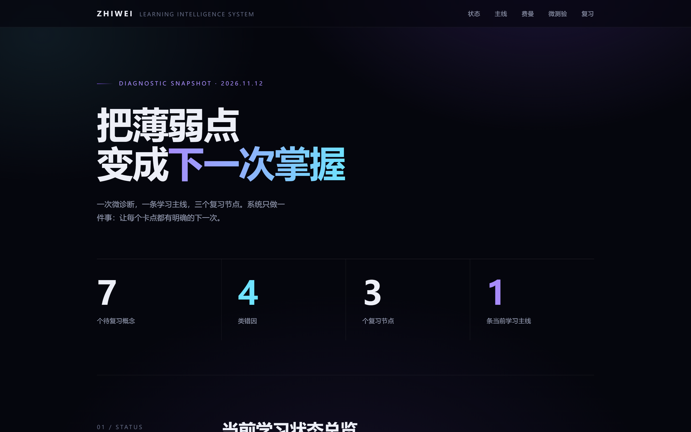
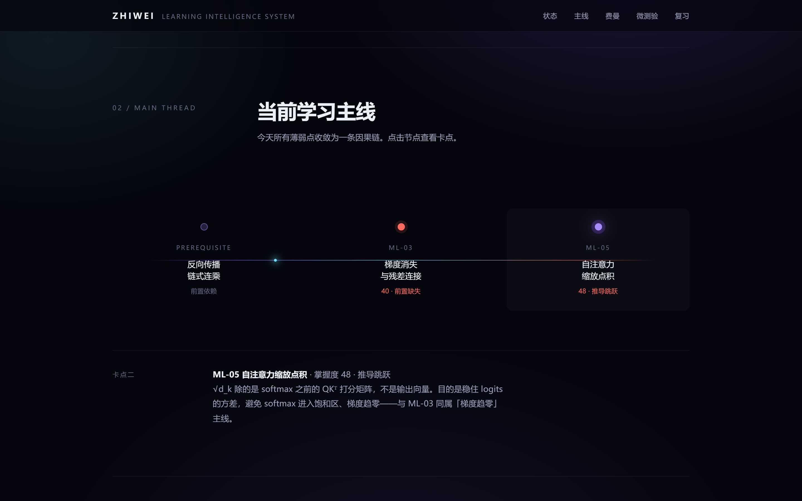
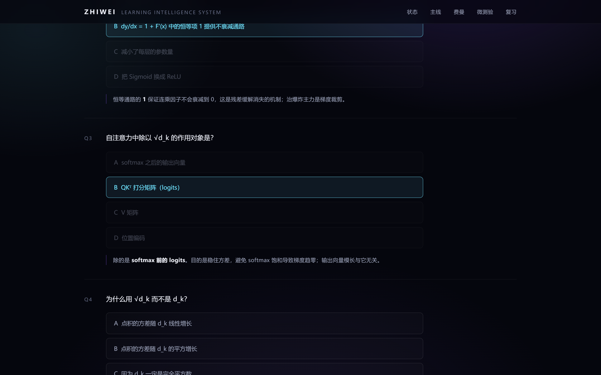
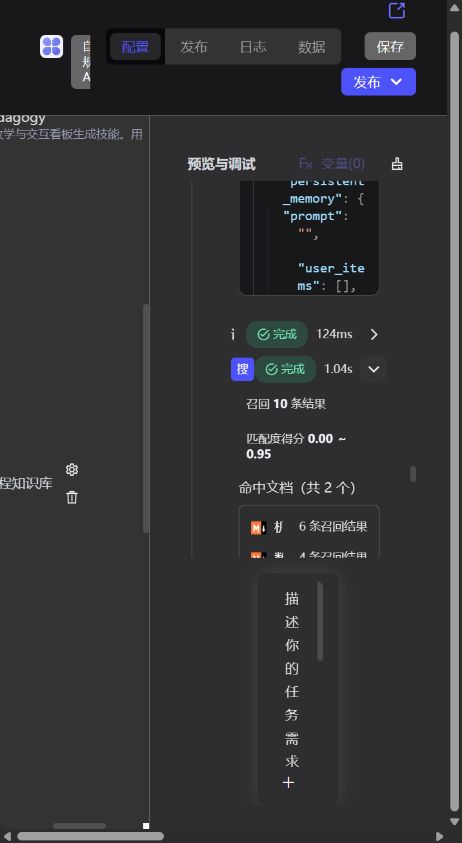

「知微学习助手（ZhiWei Learning Copilot）」是基于 EPAI 自主规划智能体构建的课程深度学习副驾驶。不直接甩标准答案，而是通过微诊断、费曼三轮追问、四类错因归因与艾宾浩斯调度，并借助 EdgeOne Pages MCP 一键发布可交互复习看板。
点击下方任一阶段，查看 EPAI 智能体在对应步骤触发的平台能力与输入输出契约。
标准化微概念卡片与专业术语表支持 5 分钟零代码跨学科迁移。
在真实端到端测试中定位 EPAI 检索融合阈值导致的 0 命中问题，并完成交叉编号校验。
bce-embedding-base_v1 下，自然语言问句对卡片正文的多项语义得分在 0.15 ~ 0.46 之间，被默认 相似度得分 ≥ 0.5 阈值全部过滤，导致智能体被迫仅依赖术语库作答。倒数排名 (fusion_rrf) 并将阈值设为 0.2 后，两份课程文档共召回 10 条卡片片段（匹配度 0.00 ~ 0.95），并自动识别出记录表与卡片间的编号偏差。以下均来自 EPAI 实测对话与 EdgeOne Pages 公网实例真实截图。



